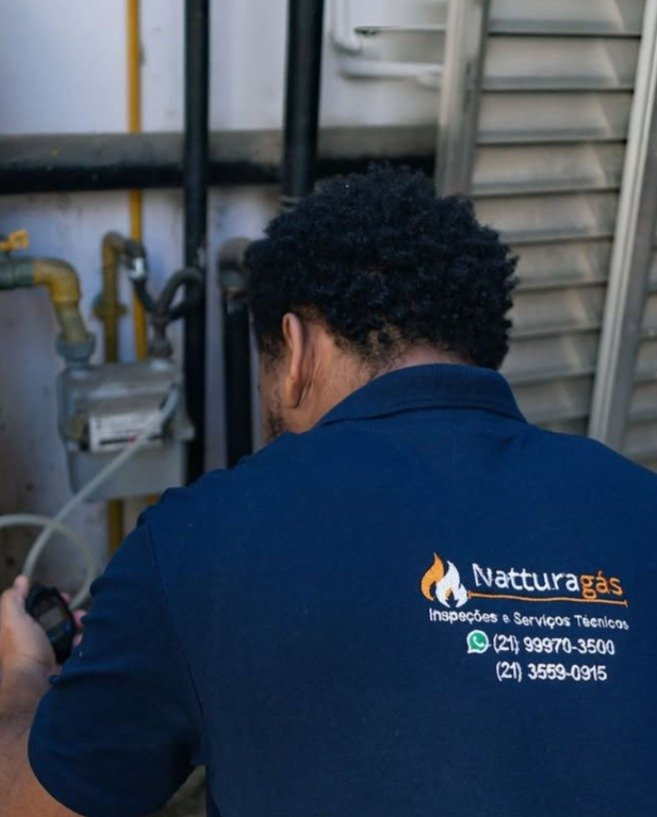

A Inspeção Periódica de Gás (IPG) é a avaliação técnica independente obrigatória para imóveis residenciais, comerciais e condomínios no Rio de Janeiro. Verificamos tubulações, aparelhos, ventilação e estanqueidade, com laudo oficial emitido por Organismo Acreditado pelo INMETRO e registro no CREA/RJ.

Segurança legal comprovada contra multas e riscos de abastecimento.
A Lei Estadual nº 6890/2014 e a Instrução Normativa AGENERSA nº 113/2024 determinam que todos os imóveis atendidos por gás canalizado realizem a inspeção das instalações a cada 5 anos.
A inspeção não é apenas uma formalidade burocrática: ela é a principal barreira contra vazamentos invisíveis e intoxicação. A ausência do laudo técnico regularizado traz penalidades imediatas para o proprietário ou condomínio.
Evite a suspensão do fornecimento de gás no seu imóvel
Consultar Situação no WhatsAppO monóxido de carbono (CO) é inodoro e imperceptível. Uma má queima no aquecedor ou exaustão irregular pode causar asfixia grave, além do risco iminente de explosão e incêndio.
Os órgãos reguladores e fiscalizadores realizam auditorias periódicas. A falta do laudo no prazo gera autuações que oneram o orçamento do morador ou a cota do condomínio.
A concessionária (Naturgy) pode lacrar o medidor e suspender o fornecimento até que um Organismo Acreditado pelo INMETRO emita o Laudo Técnico de Conformidade.
Inspeção técnica completa e independente, executada por engenheiros e técnicos habilitados com registro no CREA/RJ, conforme os requisitos da ABNT NBR ISO/IEC 17020:2012.
Verificação detalhada das aberturas de ventilação permanente e medição rigorosa de CO nos ambientes onde há aparelhos a gás em funcionamento.
Inspeção minuciosa de toda a rede interna, ramais, registros de bloqueio, mangueiras normatizadas, reguladores e aparelhos consumidores instalados.
Ensaio de pressão pneumática normatizado com manômetro digital calibrado para identificar qualquer microvazamento na tubulação antes de virar perigo.
A Natturagás Inspeções e Serviços Técnicos é um Organismo de Inspeção Acreditado (OIA) pela Coordenação Geral de Acreditação do INMETRO sob o número OIA/IG-0049A e registrada no CREA/RJ.
Nossa missão é preservar vidas e patrimônios por meio de avaliações técnicas rigorosas e imparciais. Como inspecionamos sem executar reparos e sem vender peças, garantimos independência, confidencialidade e ética em cada laudo emitido. Você tem a segurança de que nenhum defeito será inventado para forçar orçamentos de conserto.
Atendemos com excelência diferentes perfis de clientes que necessitam de laudos rápidos, seguros e em conformidade estrita com a lei.
Para proprietários e inquilinos que precisam renovar a autovistoria quinquenal de gás da Naturgy, vender ou alugar o imóvel com tranquilidade total.
Vistorias em lote para edifícios inteiros, cobrindo áreas comuns, prumadas e unidades privativas com condições e tabelas exclusivas por pacote.
Para cozinhas industriais, padarias, lavanderias, hotéis e escolas (Lei 7.924/2023) sujeitos à fiscalização rigorosa de segurança contra incêndio.
Processo ágil e sem complicações. Da primeira mensagem ao laudo oficial entregue em suas mãos.
Você informa o bairro do seu imóvel e o tipo de instalação (residencial, comercial ou condomínio) para receber a proposta.
Nossa equipe define o dia e horário mais conveniente para a visita de um inspetor credenciado e uniformizado.
Realizamos a medição de monóxido de carbono, verificação de ventilação e o teste de pressão para certificar a estanqueidade.
Emitimos o laudo técnico conclusivo com registro oficial no CREA/RJ e selo de conformidade pronto para apresentação aos órgãos.
Tudo o que você precisa saber sobre a Inspeção Periódica de Gás no Estado do Rio de Janeiro.
Não espere o fornecimento de gás ser suspenso ou receber notificações fiscais. Agende sua vistoria com a Natturagás e garanta a proteção completa da sua família e do seu patrimônio.
Agendar no WhatsApp Agora